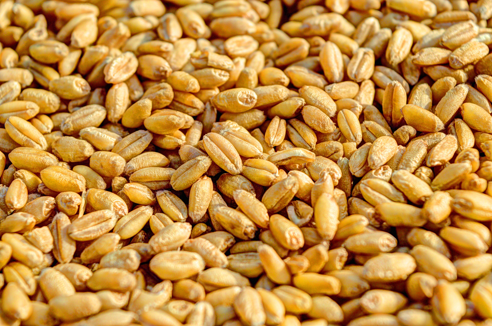
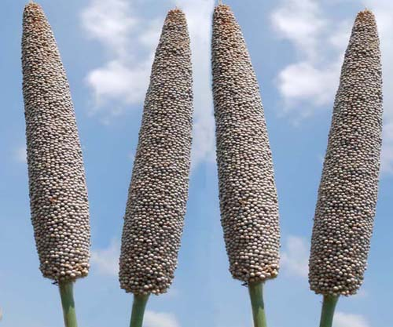
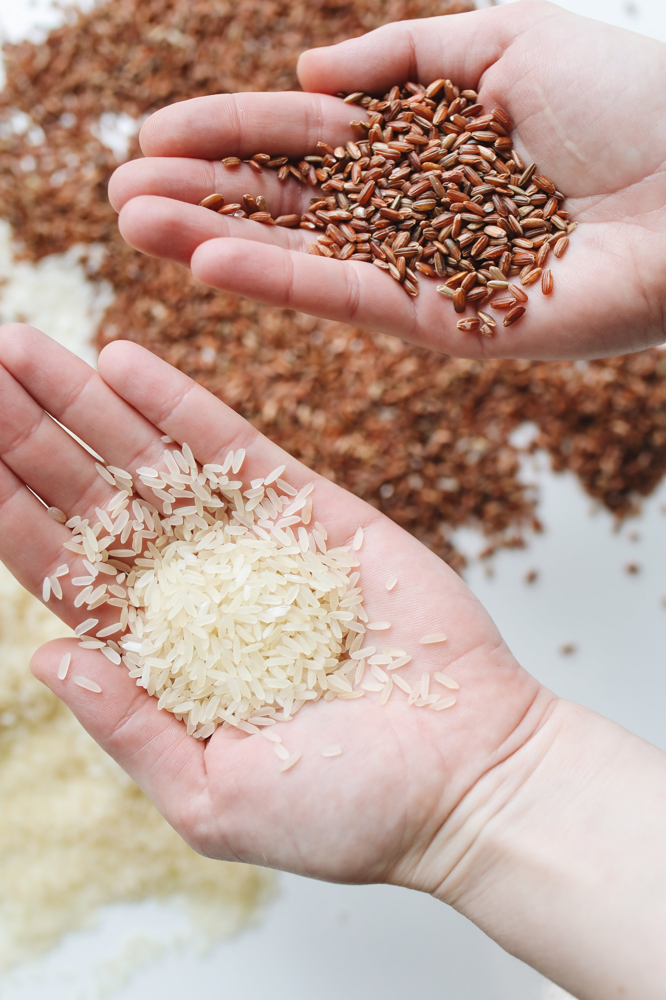
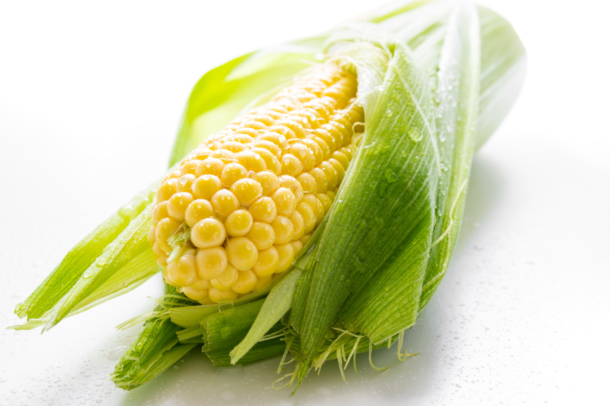
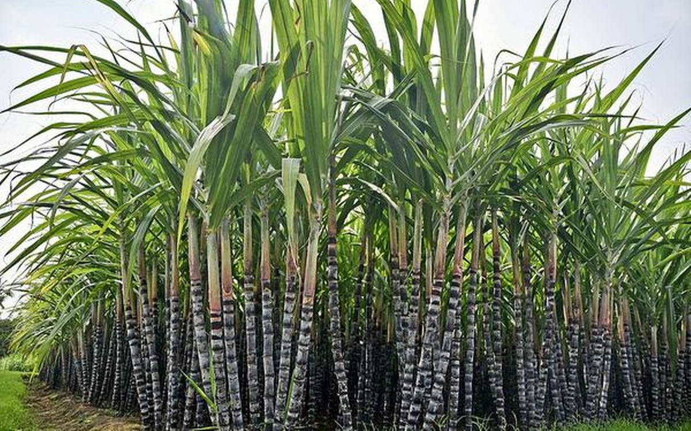
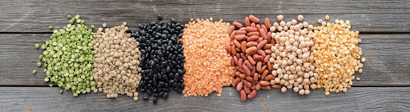

About Wheat
Wheat is the main cereal crop in India. The total area under the crop is about 29.8 million hectares in the country. The production of wheat in the country has increased significantly from 75.81 million MT in 2006-07 to an all time record high of 94.88 million MT in 2011-12. The productivity of wheat which was 2602 kg/hectare in 2004-05 has increased to 3140 kg/hectare in 2011-12. The major increase in the productivity of wheat has been observed in the states of Haryana, Punjab and Uttar Pradesh. Higher area coverage is reported from MP in recent years.
Indian wheat is largely a soft/medium hard, medium protein, white bread wheat, somewhat similar to U.S. hard white wheat. Wheat grown in central and western India is typically hard, with high protein and high gluten content. India also produces around 1.0-1.2 million tons of durum wheat, mostly in the state of Madhya Pradesh. Most Indian durum is not marketed separately due to segregation problems in the market yards. However, some quantities are purchased by the private trade at a price premium, mainly for processing of higher value/branded products.
The production and productivity of Wheat crop were quite low, when India became independent in 1947. The production of Wheat was only 6.46 million tonnes and productivity was merely 663 kg per hectare during 1950-51, which was not sufficient to feed the Indian population. The Country used to import Wheat in large quantities for fulfilling the needs of our people from many countries like USA under PL-480. The reasons of low production and productivity of Wheat at that time was (a) the tall growing plant habit resulting in lodging, when grown under fertile soils, (b) the poor tillering and low sink capacity of the varieties used, (c) higher susceptibility to diseases, (d) the higher sensitivity to thermo & photo variations, etc., resulting in poor adaptability, and (e) longer crop duration resulting in a long exposure of plants to the climatic variations and insect pest / disease attacks.
The Government of India appointed a commission in 1961 to assess the feasibility of increasing the crop productivity under prevailing Indian ecological conditions. As result of various steps taken by Govt. of India, the Wheat scenario in our country has completely changed. In the post Independence era, country used to import Wheat for our needs but due to bumper increase in the production and productivity of Wheat in the 'Green Revolution' period in late sixties, our country became self dependent in Wheat production. At present, country is producing much more excess Wheat than the requirement and Godowns are over-flooded with Wheat.
Climate requirement
Wheat crop has wide adaptability. It can be grown not only in the tropical and sub-tropical zones, but also in the temperate zone and the cold tracts of the far north ,beyond even the 60 degree north altitude . Wheat can tolerate severe cold and snow and resume growth with the setting in of warm weather in spring .It can be cultivated from sea level to as high as 3300 meters.
The best wheat are produced in areas favoured with cool, moist weather during the major portion of the growing period followed by dry, warm weather to enable the grain to ripen properly. The optimum temperature range for ideal germination of wheat seed is 20-25 C though the seeds can germinate in the temperature range 3.5 to 35 c. Rains just after sowing hamper germination and encourage seedling blight. Areas with a warm and damp climate are not suited for wheat growing.
During the heading and flowering stages, excessively high or low temperatures and drought are harmful to wheat. Cloudy weather, with high humidity and low temperatures is conducive for rust attack. Wheat plant requires about 14-15 c optimum average temperature at the time of ripening . The temperature conditions at the time of grain filling and development are very crucial for yield. Temperatures above 250c during this period tend to depress grain weight. When temperatures are high, too much energy I lost through the process of transpiration by the plants and the reduced residual energy results in poorer grain formation and lower yields. Wheat is mainly a rabi (winter) season crop in India.
Soil
Wheat is grown in a variety of soils of India. Soils with a clay loam or loam texture, good structure and moderate water holding capacity are ideal for wheat cultivation. Care should be taken to avoid very porous and excessively drained oils. Soil should be neutral in its reaction. Heavy soil with good drainage are suitable for wheat cultivation under dry conditions. These soils absorb and retain rain water well. Heavy soils with poor structure and poor drainage are not suitable as wheat is sensitive to water logging. Wheat can be successfully grown on lighter soils provided their water and nutrient holding capacity are improved.
Fertilizer management
The time and placement of fertilizer is another area where significant progress was made. It was demonstrated that 120 kg nitrogen, 60 kg phosphorus and 30 kg potash per hectare were required for optimum productivity. The N was to be applied in two split doses of 60 kg as basal and the remaining 60 kg at first irrigation and full phosphorus and potash to be applied as basal. Recently, the new wheat varieties have responded up to 180 kg N/ha with optima dose around 150 kg/ha. In the Indo-Gangetic plains, application of zinc @ 25kg/ha in rice-wheat system was found to increase the yield substantially. Recently, the use of sulphur has been found beneficial for enhancing the productivity as well as the grain protein content of wheat. Response to Mn (pockets in the Indo-Gangetic plains) and boron (eastern and far eastern region) has also been realized.
Nutrient management
With intensive agriculture, deficiency of essential nutrients has also become wide spread. The work conducted under the All India Coordinated Research Project on Micronutrient in Crops and Soils, has shown wide spread deficiency of zinc in soils in India. At the national level, the deficiency level in micro nutrients is Zn: 46 %, B: 17 %, Mo: 12 %, Fe: 11 % and Cu: 5%. The deficiency of sulphur has also been reported across a wide range of soils (38%).The yield response to sulphur has been obtained in more than 40 crops including cereal, millets, oilseeds and pulses etc. To realize the potential yield, strategies may include:
-Site specific nutrient management for targeted yieldsIntegration of crop residues, bio fertilizers etc with inorganic fertilization.-Tillage techniques like FIRBS for increasing nutrient use efficienciesRemote sensing for efficient.
-Nutrient managementNutrient management, straw quality vis-à-vis human and animal health 
About Jowar
Sorghum (Sorghum vulgare Pers.), popularly known as jowar, is the most important food and fodder crop of dryland agriculture. The annual area under it ranges between 17 and 18 million hectares and the annual production between 8 and 10 million tonnes.
Sorghum is originated in India and Africa. It is also said that its origin is Abyssinia and from there it was brought to USA and European countries.
Jowar is mainly concentrated in the peninsular and central India. Maharashtra, Karnataka, Andhra Pradesh, Madhya Pradesh, Gujarat, Rajasthan, Uttar Pradesh (the Bundelkhand region) and Tamil Nadu are the major jowar – growing states. Other states grow sorghum in small areas primarily for fodder.
The sorghum grain is used primarily as human food in various forms, such as roti or bhakri (unleavened bread), or is cooked like rice. Sorghums are also malted, popped and several local preparations are made. Green and dried fodder is the most important roughage for feeding cattle throughout the country. The utilization of grain sorghum as a cattle feed, poultry ration and other industrial uses is at present not very significant, although considerable scope exists.
Climate and soil:
Sorghum plants are very hardy and can withstand high temperature and drought, however, it is grown in arid regions of U.P, Rajasthan and humid regions of Bengal and Bihar. It may be successfully grown under atmospheric temperature ranging between 15 0C to 40 0C and annual rainfall ranging from 400 to 1000 mm.
Sorghum is grown on a variety of soil types but the clayey loam soil rich in humus is found to be the most ideal soil. It may tolerate mild acidity to mild salinity under pH 5.5 to 8.0. A good sorghum soil must have an efficient drainage facilities though, it may withstand water logging more than maize.
Land Preparation:
Deep summer ploughing with mould board plough soon after rabi crop is harvested and leaving the soil exposed to sun until onset of monsoon is a common practice. With the onset of monsoon the land should be ploughed twice by country plough. But the soil for grain crop should be pulverised for a fine tilth by harrowing and cross plankings. If desired, field should be levelled before sowing so that rainwater may be well distributed throughout the field.
Sowing:
a) Sowing time:Sorghum crop is grown in almost all the seasons of the year. In Northern India conditions it is grown in kharif season but in Southern India the crop is grown during Rabi and summer seasons. Kharif crop should be sown soon after first break of monsoon rains i.e. nearly in last week of June. Therefore, the best sowing time is in last week of June to first week of July depending upon onset of monsoon. Whereas rabi jawar is sown in the month of October to November.
b) Spacing:A spacing of 40-45 cm between the rows and 15-20 cm between the plants is quite satisfactory.
c) Seed rate: Required plant population may be obtained by using a seed rate of 8-12 kg/ha. The seeds are sown about 3-4 cm deep in the furrows.

About Bajra
Bajra is popularly known as “pearl millet” and belongs to the family of Graminea. This grain is basically originated from India or Africa. Bajra is a coarse grain crops and considered to be the poor man’s staple nourishment and suitable to cultivate in dry lands. Major Bajra production states in India are: Rajasthan, Maharashtra, Haryana, Uttar Pradesh and Gujarat. Bajra can also used as valuable animal fodder. It is one of the major crops of China, India, South Eastern Asia, Sudan, Pakistan, Arabia, Russia & Nigeria.
Major Bajra Production States in India:
Top Bajra producing state in Rajasthan followed by Maharashtra, Haryana, Gujarat and Uttar Pradesh. Top high yielding stats is Tamil Nadu.
Health Benefits of Bajra or Pearl Millet:
Some of the health benefits of Bajra are given below.
Bajra is very good source of energy. Bajra promotes heart health. Bajra helps in reducing weight. Bajra helps in digestion disorders. Bajra may help in preventing cancer. Bajra control blood sugar levels and hence good for diabetic. Local Names of Bajra in India: Pearl Millet (English), Bajra (Hindi, Urdu, Panjabi) Sajje (Kannada), Kambu (Tamil), Kambam (Malyalam), Sajjalu (Telugu), Bajri (Rajasthani, Gujarati and Marathi).
Varieties:
Following are the important varieties of the crop:Kharif, Rabi, Fodder
Agro-climate required for Bajra Cultivation:
Bajra grows well in dry and warm climate conditions and it’s drought tolerant crop which requires low annual rainfall ranging between 40 cm to 60 cm. Ideal temperature for bajra cultivation is between 20 oC to 30 oC. Moist weather is advantageous during its vegetable growth. In North India, bajra is grown as kharif crop and in some southern parts is grown as summer crop providing irrigation.
Soil requirement:
Bajra can be grown in wider range of soil. However, It thrives best in black cotton soil, sandy loam soil having well drainage. This crop dose not prefer acidic and water logging soil. Avoid saturated soil for its cultivation. It grows successfully well in soil with low pH. Bajra can be easily grown in region where other crops like wheat and maize would not survive.
Seed treatment:
The organo mercurial compound ceresin, agrosan should be used@ 2-3 kg/ha to control seed borne diseases.
Seed rate:
3-3.5 kg/ha for dibbling method and 4-5 kg/ha for drilling method
Spacing:
Row to row 40-45 cm, plant to plant 10-12 cm and depth 2-3 cm.
Sowing Time:
June to July
Manures and fertilisers:
The fertiliser requirement of local varieties of Pearl millet can easily be met by the application of 10-15 tonnes of compost or farm yard manure per hectare. But the nutrient supply for the high yielding varieties and hybrids should be supplemented with inorganic fertilisers. Amount of fertiliser should be given on the basis of soil test value for maximum profit. General recommendations based on experimental finding s are 100-120 kg nitrogen, 40-60 kg P2O5 and 30-40 kg K2O per hectare. Half dose of nitrogen and full doses of phosphorus and potassium should be applied at the time of sowing in furrows approximately 3-5 centimetres below the seed. This can be done by placing fertilisers through a funnel and dropping the seed in the same furrow by hand wherever seed-cum-fertiliser drill are not available. The remaining nitrogen is top dressed in the two splits, one at the time of thinning (three to four weeks after sowing) and rest at ear formation stage. This dose of nitrogen can be withheld if moisture is limiting. In barani conditions foliar spray of 3% urea is also recommended.
Weed control:
Competition with weeds could reduce yield by 25-25%. The important weeds that grow with pearl millet are: sathi (Trianthema portulacastrum), kewai (Digitaria sanguinalis), makra (Dactelocenium aegyptium), Anjan grass (Echinochloa colonum), doob (Cynodon dactylon) and motha (Cyperus rotundus. Chemical weed control is an effective and economical method in case of pearl millet. Pre-emergence application of atrazine at the rate of 0.5 kg a.i/ha controlled 71-96% of the broad leaved weeds and increased the yield by almost 30-40% over the unweeded control. Manual weeding is also recommended for perennial weeds.
About Rice
Oryza Sativa, it is believed, is associated with wet, humid climate, though it is not a tropical plant. It is probably a descendent of wild grass that was most likely cultivated in the foothills of the far Eastern Himalayas. Another school of thought believes that the rice plant may have originated in southern India, then spread to the north of the country and then onwards to China. It then arrived in Korea, the Philippines (about 2000 B. C.) and then Japan and Indonesia (about 1000 B. C.)
The journey of rice around the world has been slow, but once it took root it stayed and became a major agriculture and economic product for the people. In the Indian subcontinent more than a quarter of the cultivated land is given to rice (20011-12). It is a very essential part of the daily meal in the southern and eastern parts of India. In the northern and central parts of the subcontinent, where wheat is frequently eaten, rice holds its own and is cooked daily as well as on festivals and special occasions.
History of Rice in India
India is an important centre of rice cultivation. The rice is cultivated on the largest areas in India. Historians believe that while the indica variety of rice was first domesticated in the area covering the foothills of the Eastern Himalayas (i.e. north-eastern India), stretching through Burma, Thailand, Laos, Vietnam and Southern China, the japonica variety was domesticated from wild rice in southern China which was introduced to India. Perennial wild rice still grow in Assam and Nepal. It seems to have appeared around 1400 BC in southern India after its domestication in the northern plains. It then spread to all the fertile alluvial plains watered by rivers. Some says that the word rice is derived from the Tamil word arisi.
Climatic Requirements
In India rice is grown under widely varying conditions of altitude and climate. Rice cultivation in India extends from 8 to35ºN latitude and from sea level to as high as 3000 meters. Rice crop needs a hot and humid climate. It is best suited to regions which have high humidity, prolonged sunshine and an assured supply of water. The average temperature required throughout the life period of the crop ranges from 21 to 37º C. Maximum temp which the crop can tolerate 400C to 42 0C.
Nutritional value of Rice
Rice is a nutritional staple food which provides instant energy as its most important component is carbohydrate (starch). On the other hand, rice is poor in nitrogenous substances with average composition of these substances being only 8 per cent and fat content or lipids only negligible, i.e., 1per cent and due to this reason it is considered as a complete food for eating. Rice flour is rich in starch and is used for making various food materials. It is also used in some instances by brewers to make alcoholic malt. Likewise, rice straw mixed with other materials is used to produce porcelain, glass and pottery. Rice is also used in manufacturing of paper pulp and livestock bedding.
The variability of composition and characteristics of rice is really broad and depends on variety and environmental conditions under which the crop is grown. In husked rice, protein content ranges in between 7per cent to 12per cent. The use of nitrogen fertilizers increases the percentage content of some amino acids.
Medicinal Value
The immense diversity of rice germplasm is a rich source for many rice based products and is also used for treating many health related maladies such as indigestion, diabetes, arthritis, paralysis, epilepsy and give strength to pregnant and lactating mothers. Ancient Ayurvedic literature testify the medicinal and curative properties of different types of rice grown in India. Medicinal rice varieties like Kanthi Banko (Chhattisgarh), Meher, Saraiphul & Danwar (Orissa), Atikaya & Kari Bhatta (Karnataka), are very common in India. Few varieties cultivated in restricted pockets of Kerala for their medical properties e.g. Chennellu, Kunjinellu, Erumakkari & Karuthachembavu etc.
Crop Production Practices
In India Rice is mainly grown in two types of soils i.e., (i) uplands and (ii) low lands. The method of cultivation of rice in a particular region depends largely on factors such as situation of land, type of soils, irrigation facilities, availability of labourers intensity and distribution of rainfalls. The crop of rice is grown with the following methods
-Dry or Semi-dry upland cultivation
Broadcasting the seed Sowing the seed behind the plough or drilling
-Wet or lowland cultivation
Transplanting in puddled fields.Broadcasting sprouted seeds in puddled fields.
Selection of Seeds
The use of quality seeds in cultivation of rice is an important factor to get better crop yield. Therefore, proper care has to be taken in selecting seeds of the best quality. Much of the success in raising the healthy seedlings depends on the quality of seed. Seeds intended for sowing should satisfy the following requirements
The seed should belong to the proper variety, which is proposed to be grown.
The seed should be clean and free from obvious mixtures of other seeds.The seed should be mature, well developed and plump in size.
The seed should be free from obvious signs of age or bad storage.The seed should have a high germinating capacity.
Before sowing the seed should be treated with fungicides which protects the seed against soil-born fungi and also give a boost to the seedlings.
About Maize
Maize (Zea mays L) is one of the most versatile emerging crops having wider adaptability under varied agro-climatic conditions. Globally, maize is known as queen of cereals because it has the highest genetic yield potential among the cereals. It is cultivated on nearly 150 m ha in about 160 countries having wider diversity of soil, climate, biodiversity and management practices that contributes 36 % (782 m t) in the global grain production. The United States of America (USA) is the largest producer of maize contributes nearly 35 % of the total production in the world and maize is the driver of the US economy. The USA has the highest productivity (> 9.6 t ha-1 ) which is double than the global average (4.92 t ha-1). Whereas, the average productivity in India is 2.43 t ha-1
In India, maize is the third most important food crops after rice and wheat. According to advance estimate its production is likely to be 22.23 M Tonnes (2012-13) mainly during Kharif season which covers 80% area. Maize in India, contributes nearly 9 % in the national food basket. In addition to staple food for human being and quality feed for animals, maize serves as a basic raw material as an ingredient to thousands of industrial products that includes starch, oil, protein, alcoholic beverages, food sweeteners, pharmaceutical, cosmetic, film, textile, gum, package and paper industries etc.
The maize is cultivated throughout the year in all states of the country for various purposes including grain, fodder, green cobs, sweet corn, baby corn, pop corn in peri-urban areas. The predominant maize growing states that contributes more than 80 % of the total maize production are Andhra Pradesh (20.9 %), Karnataka (16.5 %), Rajasthan (9.9 %), Maharashtra (9.1 %), Bihar (8.9 %), Uttar Pradesh (6.1 %), Madhya Pradesh (5.7 %), Himachal Pradesh (4.4 %). Apart from these states maize is also grown in Jammu and Kashmir and North-Eastern states. Hence, the maize has emerged as important crop in the non-traditional regions i.e. peninsular India as the state like Andhra Pradesh which ranks 5th in area (0.79 m ha) has recorded the highest production (4.14 m t) and productivity (5.26 t ha-1 ) in the country although the productivity in some of the districts of Andhra Pradesh is more or equal to the USA.
Maize can be grown successfully in variety of soils ranging from loamy sand to clay loam. However, soils with good organic matter content having high water holding capacity with neutral pH are considered good for higher productivity. Being a sensitive crop to moisture stress particularly excess soil moisture and salinity stresses; it is desirable to avoid low lying fields having poor drainage and also the field having higher salinity. Therefore, the fields having provision of proper drainage should be selected for cultivation of maize.
All India Coordinated Research Project (AICRP) on maize was launched in 1957 with the objective to develop and disseminate genetically superior cultivars and production/protection technologies. AICRP organizes interdisciplinary, interinstitutional, co-operative and systematic testing of newly developed cultivars of both public and private sectors for different agro-climatic zones of the country. The project resulted in refining efforts in varietal improvement. Since 1961, a total number of 187 cultivars including single cross hybrids, composites and multiple parent crosses have been released nationwide. In India, maize is traditionally grown in monsoon (Kharif) season, which is accompanied by high temperature
About Sugarcane
Sugarcane (Saccharum officinarum) family Gramineae (Poaceae) is widely grown crop in India. It provides employment to over a million people directly or indirectly besides contributing significantly to the national exchequer. Sugarcane growing countries of the world lay between the latitude 36.7° north and 31.0° south of the equator extending from tropical to subtropical zones. Sugar cane originated in New Guinea where it has been known for thousands of years. Sugar cane plants spread along human migration routes to Asia and the Indian subcontinent. Here it cross-bred with some wild sugar cane relatives to produce the commercial sugar cane we know today.
Cultivation of sugarcane in India dates back to the Vedic period. The earliest mention of sugarcane cultivation is found in Indian writings of the period 1400 to 1000 B.C. It is now widely accepted that India is the original home of Saccharum species. Saccharum barberi and Polynesian group of island especially New Guinea is the centre of origin of S. officinarum. It belongs to family Gramineae (Poaceae), class monocotyledons and order glumaceae sub family panicoidae, tribe Andripogoneae and sub tribe saccharininea. The cultivated canes belong to two main groups: (a) thin, hardy north Indian types S.barberi and S.Sinense and (b) thick, juicy noble canes Saccharum officinarum. Highly prized cane is S. officinarum.
Important regions/ zones for sugarcane cultivation in India
Broadly there are two distinct agro-climatic regions of sugarcane cultivation in India, viz., tropical and subtropical. However, five agro-climatic zones have been identified mainly for the purpose of varietal development. They are (i)North Western Zone (ii) North Central Zone (iii) North Eastern Zone (iv) Peninsular Zone (v) Coastal Zone.
Tropical region Shared about 45% and 55% of the total sugarcane area and production in the country, respectively along with the average productivity of 77 t/ha (2011-12). Sub-tropical region accounted for about 55% and 45% of total area and production of sugarcane with an average productivity about 63 t/ha (2011-12)
Tropical Sugarcane region
The tropical sugarcane region consists of sugarcane agro climatic zone 4 (peninsular zone) and 5(Coastal zone) which includes the states of Maharashtra, Andhra Pradesh, Tamil Nadu, Karnataka, Gujarat, Madhya Pradesh, Goa, Pondicherry and Kerala.
Sub-tropical sugarcane region:
Around 55 per cent of total cane area in the country is in the sub-tropics. U.P, Bihar, Haryana and Punjab comes under this region.
Crop distribution:
Sugarcane growing countries of the world are lying between the latitude 36.70 north and 31.00 south of the equator extending from tropical to sub-tropical zones. In India sugarcane is cultivated all over the country from latitude 80 N to 330 N, except cold hilly areas like Kashmir valley, Himachal Pradesh and Arunachal Pradesh.
Climatic requirement
Temperature for different critical stages of sugarcane: The different critical stages are germination, tillering, early growth, active growth and elongation. Optimum temperature for sprouting (germination) of stem cuttings is 32° to 38°c. It slows down below 25°, reaches plateau between 30°-34°. Temperatures above 38° reduce the rate of photosynthesis and increase respiration. For ripening, however, relatively low temperatures in the range of 12° to 14° are desirable.
Reduction in yield of sugarcane due to rise in temperature
The sugarcane productivity and juice quality are profoundly influenced by weather conditions prevailing during the various crop-growth sub-periods. Sugar recovery is highest when the weather is dry with low humidity; bright sunshine hours, cooler nights with wide diurnal variations and very little rainfall during ripening period. These conditions favour high sugar accumulation. The climatic conditions like very high temperature or very low temperature deteriorate the juice quality and thus affecting the sugar quality. Favourable climate like warm and humid climate favour the insect pests and diseases, which cause much damage to the quality and yield of its juice and finally sucrose contents.
About Pulses
Pulses are consumed as Dal, which is a cheap source of plant protein. These are consumed because of body building properties having presence of various amino acids. These also have medicinal properties. By products of pulses like leaves, pod coats and bran are given to animals in the form of dry fodder. Some pulse crops like Gram, Lobia, Urdbean & Moongbean are fed to animals as green fodder. Moong plants are also used as green manure which improve soil health and adds nutrient into the soil.
A number of pulse crops are grown in India and world. Among the crops, major ones are Gram, Pigeonpea, Lentil, Fieldpeas etc. According to history, the origin of Gram is in South West Asia – probably Afghanistan and Persia, Pigeonpea in Africa, Lentil in Turkey to South Iran and Fieldpeas in Mediterranean Region of Southern Europe and Western Asia.
Important Major Pulses Growing Zones / States in India
Varietal Development programme of pulses got strengthened in 1967 with the initiation of All-India Co-ordinated Research Improvement Programme. Through this programme, the varieties suitable for across the country i.e. agro-climatic zones: Northern Hills Zone – J&K, Himachal Pradesh, North West of Uttar Pradesh; North West Plain Zone – Haryana, Punjab, Rajasthan, Gujarat, western Uttar Pradesh; North East Plain Zone – eastern Uttar Pradesh, Bihar, West Bengal, Assam, Tripura, Mizoram, Northern Odisha; Central Zone – Madhya Pradesh, Maharashtra, Parts of Karnataka, Andhra Pradesh; South Zone – Andhra Pradesh, Tamil Nadu, Kerala, Karnataka and southern Odisha have been developed.
Climatic Requirement
Pulse crops are cultivated in Kharif, Rabi and Zaid seasons of the Agricultural year. Rabi crops require mild cold climate during sowing period, during vegetative to pod development cold climate and during maturity / harvesting warm climate. Similarly, Kharif pulse crops require warm climate throughout their life from sowing to harvesting. Summer pulses are habitants of warm climate. Seed is required to pass many stages to produce seed like germination, seedling, vegetative, flowering, fruit setting, pod development and grain maturity / harvesting.
Area, Production And Yield Of Major Pulse Crops Growing States In India
There was 239 lakh ha area in India at triennium ending 2010-11, which was mainly contributed by Madhya Pradesh, Rajasthan, Maharashtra, Karnataka and Uttar Pradesh. From this area, 158 lakh tonnes production of pulse was received. The major contributors of this production were Madhya Pradesh, Maharashtra, Uttar Pradesh, Rajasthan and Andhra Pradesh. During this period, productivity of pulses was recorded as 661 kg / ha with highest in Punjab (905 kg/ha), Haryana (891), Bihar (839), Uttar Pradesh (823) and West Bengal (811).
